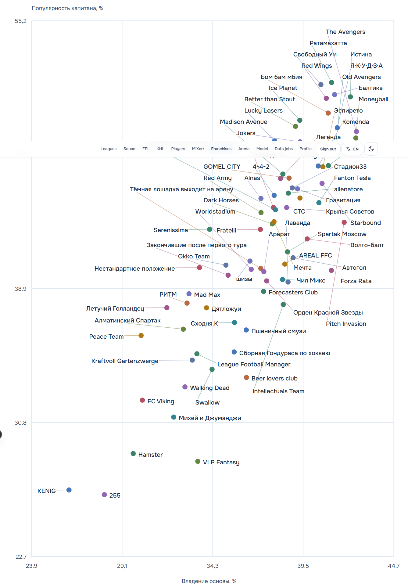
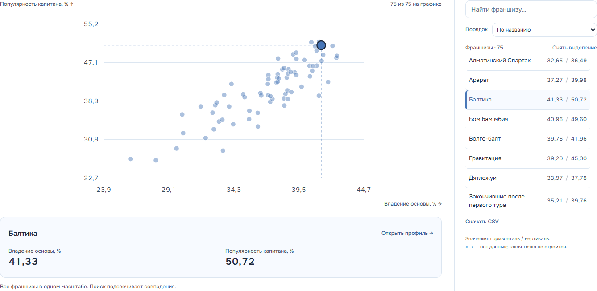

Те же 75 групп и тот же снимок данных от 4 октября 2026.
Длинный график с сетью подписей.
Высота поля на desktop — 1923 px.

Компактное поле, поиск по названиям, подсветка и точные значения.
Высота поля — 430 px; график доступен и на телефоне.

Сохранены все группы, формулы, календарь, профили, таблицы и CSV. Оптимизации серверного кэша не изменены.